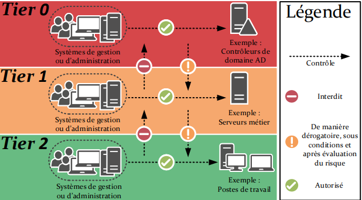

🛡️ Active Directory – Projet BESAFE
Cette page présente l’architecture logique d’Active Directory, ainsi que les principes de sécurité et de tiering.
⚙️ Détails techniques
| Élément | Valeur (BESAFE) |
|---|---|
| Forêt | besafe.local |
| Nombre de domaines | 1 (forêt mono-domaine) |
| Rôle principal | Annuaire d’authentification et d’autorisation |
| Services AD associés | AD DS, DNS, DHCP |
| Sécurité | Modèle HardenAD + Tiering + durcissement GPO |
| Référentiels | HardenAD, Microsoft Tiering Model |
🧩 Vue d’ensemble de l’architecture

- Forêt :
besafe.local - Domaine :
besafe.local - Contrôleurs de domaine : 2 DC recommandés (redondance, haute dispo)
- DNS : zones intégrées AD, sécurisées
- Modèle de sécurité :
- Tiering T0 / T12 / TL
- Durcissement GPO (HardenAD)
🏛️ 1. Modèle de tiering (T0 / T12 / TL)
### 🎯 Objectif du tiering Limiter l’impact d’un compte compromis en **segmentant les privilèges** : - **Tier 0 (T0)** : identité & infrastructure critiques - **Tier 1–2 (T12)** : serveurs / workloads IT - **Tier L (Legacy)** : tout ce qui ne respecte pas encore les standards (héritage, exceptions, à retraiter) ### 📚 Modèle BESAFE | Tier | Périmètre | Exemples BESAFE | Règles principales | |:------|:------------------------------------------|:-----------------------------------------|:----------------------------------------------------| | **T0** | Contrôle de l’annuaire & de la PKI | DC, PKI, comptes d’admin domaine/entreprise | Accès uniquement depuis postes T0, MFA, bastion | | **T12** | Serveurs & services d’infra / applicatifs | vCenter, serveurs Windows/Linux, hyperviseurs, appliances | Admins T12, pas d’accès direct aux objets T0 | | **TL** | Legacy / exceptions | vieux serveurs, comptes techniques historiques | À traiter : migration, réduction des privilèges | ### 🧱 Concrétisation dans AD - **Séparation des comptes** : - Un compte **utilisateur personnel** (Tier 2) - Un ou plusieurs comptes **admin** dédiés (T0 / T12) - **Jamais de connexion Tier 0** sur : - Postes utilisateurs - Serveurs applicatifs - VMs non dédiées T0 > 🎯 Objectif final : un compte compromis en T12 ou TL **ne permet pas** de remonter facilement vers T0.🗂️ 2. Structure des OU
### 🧱 Principes de design - **Pas d’objets directement dans la racine** du domaine (hors conteneurs système) - Tout objet administré est placé dans une **OU dédiée**, avec: - GPO adaptées - Droits d’administration délégués (si besoin) ### 🧬 Arborescence logique (exemple BESAFE)besafe.local
├── _Administration
├── Harden_T0
├── Harden_T12
├── Harden_TL
├── Computers
├── Domain Controllers
├── Managed Service Accounts
├── Provisioning
└── Users
👥 3. Comptes & groupes administratifs
### 🔑 Séparation des comptes - **1 compte utilisateur standard** par admin *(ex : `prenom.nom`)* - **1 compte admin T12** *(ex : `admin.prenom`)* - **1 compte admin T0** si nécessaire *(ex : `t0.admin.prenom.`)* 👉 **Aucun compte admin ne doit servir à :** - Naviguer sur Internet - Lire la messagerie - Se connecter sur un poste non lié à son Tier - Effectuer des tâches bureautiques --- ### 👥 Groupes d’administration | Groupe | Rôle | Tier | |:--|:--|:--| | **BESAFE-T0-Admins** | Admin DC, PKI, configuration globale | **T0** | | **BESAFE-T12-ServerAdmins** | Admin serveurs membres (Windows / Linux) | **T12** | | **BESAFE-Helpdesk** | Support N1/N2 (reset password, join domain…) | **T12 / TL** | 🔗 Les groupes sont ensuite **mappés** : - soit aux **rôles intégrés** (Domain Admins, Server Operators, Account Operators…) - soit utilisés pour une **délégation fine** (OU spécifique, droits limités). --- ### 🚫 Ce qui est proscrit - ❌ Utiliser le compte **Administrator** comme compte d’administration principal - ❌ Créer des comptes de service avec droits **Domain Admin** --- ### 🎯 Objectif Limiter la surface d’attaque et assurer une **administration lisible, segmentée et sécurisée**.🧷 4. GPO & durcissement (vue d’ensemble)
### 🧬 Architecture GPO (exemple) | Type de GPO | Liée à | Objectif principal | |:--|:--|:--| | **GPO_Harden_T0** | OU Harden_T0 + DC | Hardening DC / PKI / Tier0 | | **GPO_Harden_T12_Servers** | OU Harden_T12 | Durcissement serveurs membres | | **GPO_Harden_TL** | OU Harden_TL | Confinement / restrictions legacy | | **GPO_Users_Security** | OU Users | Hardening sessions utilisateurs | | **GPO_Workstations** | OU Computers | Sécurité OS, pare-feu, BitLocker | | **GPO_AdminLogonRestrictions** | _Administration | Restrictions de logon des admins | --- ### 🔐 Exemples de paramètres issus d’HardenAD / bonnes pratiques **🔒 Désactivation des protocoles obsolètes** - SMBv1 - NTLMv1 - LM Hash **🔒 Renforcement Kerberos** - AES requis - Durées de tickets maîtrisées - Interdiction des préauths faibles **📜 Journalisation avancée** - Logon / Logoff - Changements d’objets sensibles - Modifications de groupes à privilèges **🖥️ Paramètres RDP** - NLA obligatoire - ❌ Interdit sur DC (sauf bastion / PAM) 📌 *Le détail complet repose sur les baselines HardenAD + recommandations Microsoft.* ✅ Résumé global
| Étape | Thème | Objectif | Résultat attendu |
|---|---|---|---|
| 1️⃣ | Modèle de tiering | Segmenter les privilèges (T0 / T12 / TL) | Impact minimal en cas de compromission |
| 2️⃣ | Structure d’OU | Organiser l’AD proprement | Application claire des GPO |
| 3️⃣ | Comptes / groupes admin | Séparer usage & admin | Principe du moindre privilège |
| 4️⃣ | GPO & hardening | Baselines de sécurité | Réduction du risque AD |
🔗 Liens utiles
- ANSSI - https://cyber.gouv.fr/publications/recommandations-pour-ladministration-securisee-des-si-reposant-sur-ad
- Microsoft – https://learn.microsoft.com/en-us/security/privileged-access-workstations/privileged-access-access-model
- HardenAD – https://github.com/LoicVeirman/HardenAD
- HardenAD – https://hardenad.net